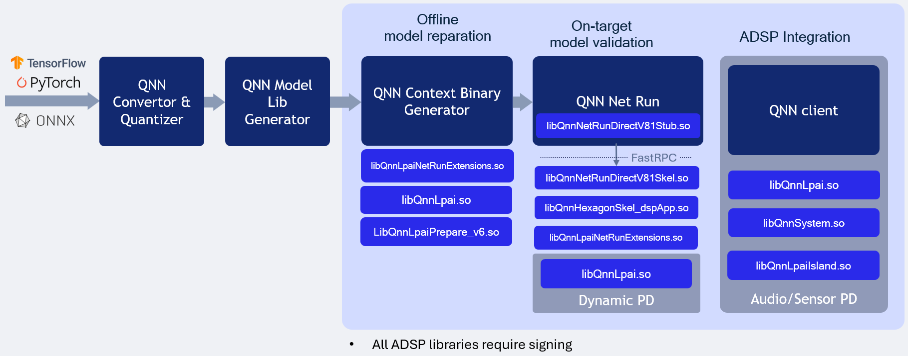

QNN LPAI Native aDSP Backend Type¶
LPAI Native DSP Backend Type Execution

Overview¶
The QNN LPAI Native aDSP Backend Type is designed to enable efficient execution of the LPAI backend by providing direct access to the DSP (Digital Signal Processor) hardware. This approach eliminates the overhead associated with data and control transfer via the IPC (Inter-Process Communication) mechanism, resulting in significantly reduced latency and improved runtime performance. Applications that can access input sources such as audio, camera, or sensors directly on the aDSP can run independently of the main operating system (Linux/Android). To use the native aDSP path, these applications must be integrated into either the audio or sensor Process domain (PD).
Execution on a physical device using the native aDSP target is supported exclusively for offline-prepared graphs. This mode does not support dynamic graph compilation or runtime graph generation.
To run on a specific target platform, you must use binaries compiled for that platform. The appropriate library can be selected using the QNN_TARGET_ARCH environment variable (see more details below).
Target Platform Configuration¶
To deploy the LPAI backend on a specific target, configure the environment using the correct architecture-specific binaries. Set the QNN_TARGET_ARCH variable as shown below:
export QNN_TARGET_ARCH=<target_arch>
Supported target architectures include:
aarch64-android for Android-based ARM64 platforms
aarch64-oe-linux-gcc<your version> for LE Linux-based ARM64 platforms
aarch64-qnx800 for QNX-based ARM64 platforms
hexagon-v<version> for Qualcomm Hexagon DSP platforms
Important
Not all target architectures are supported for Android. Some platforms are lack HLOS (High-Level Operating System) support entirely. In such cases, HLOS deployment instructions do not apply. Ensure that your target platform supports the necessary runtime environment for LPAI execution. Refer to the Available Backend Libraries table for platform-specific compatibility and deployment guidance.
Setting Environment Variables on HLOS Android/Linux¶
To configure your development or deployment environment on an x86 Linux host, set the following environment variables:
# Example for Android targets (Not all targets are supported for Android)
$ export QNN_TARGET_ARCH=aarch64-android
# Example for LE Linux targets (If applicable)
$ export QNN_TARGET_ARCH=aarch64-oe-linux-gcc<your version>
# Example for QNX targets (If applicable)
$ export QNN_TARGET_ARCH=aarch64-qnx800
# For Hexagon versrion
$ export HEX_VER=81
$ export HEX_ARCH=hexagon-v${HEX_VER}
# For LPAI v6 HW version
$ export HW_VER=v6
Note
To execute the LPAI backend on an Android device, the following conditions must be met:
The following Lpai artifacts in
${QNN_SDK_ROOT}/lib/lpai-${HW_VER}/unsignedmust be signed by the client:libQnnLpai.solibQnnLpaiNetRunExtensions.so
The following qnn-net-run artifacts in
${QNN_SDK_ROOT}/lib/${HEX_ARCH}/unsignedmust be signed by the client:libQnnHexagonSkel_dspApp.solibQnnNetRunDirectV${HEX_VER}Skel.so
qnn-net-runmust be executed with root permissions.
Prepare config.json file for direct-mode, where is_persistent_binary is required for direct-mode:
{
"backend_extensions": {
"shared_library_path": "/data/local/tmp/LPAI/adsp/libQnnLpaiNetRunExtensions.so",
"config_file_path": "./lpaiParams.conf"
},
"context_configs": {
// This parameter should be set for native aDSP LPAI backend
"is_persistent_binary": true
}
}
Create test directory on the device¶
$ adb shell mkdir -p /data/local/tmp/LPAI/adsp
Push the offline LPAI generated model to the device¶
$ adb push ./output/qnn_model_8bit_quantized.serialized.bin /data/local/tmp/LPAI
Push the Lpai libraries to the device¶
$ adb push ${QNN_SDK_ROOT}/lib/lpai-${HW_VER}/unsigned/libQnnLpai.so /data/local/tmp/LPAI/adsp
$ adb push ${QNN_SDK_ROOT}/lib/lpai-${HW_VER}/unsigned/libQnnLpaiNetRunExtensions.so /data/local/tmp/LPAI/adsp
Push the qnn-net-run libraries to the device¶
$ adb push ${QNN_SDK_ROOT}/lib/${HEX_ARCH}/unsigned/libQnnHexagonSkel_dspApp.so /data/local/tmp/LPAI/adsp
$ adb push ${QNN_SDK_ROOT}/lib/${HEX_ARCH}/unsigned/libQnnNetRunDirectV${HEX_VER}Skel.so /data/local/tmp/LPAI/adsp
Push the input data and input lists to the device¶
$ adb push ${QNN_SDK_ROOT}/examples/QNN/converter/models/input_data_float /data/local/tmp/LPAI
$ adb push ${QNN_SDK_ROOT}/examples/QNN/converter/models/input_list_float.txt /data/local/tmp/LPAI
Push the qnn-net-run tool and its dependent libraries¶
$ adb push ${QNN_SDK_ROOT}/bin/${QNN_TARGET_ARCH}/qnn-net-run /data/local/tmp/LPAI
$ adb push ${QNN_SDK_ROOT}/lib/${QNN_TARGET_ARCH}/libQnnNetRunDirectV${HEX_VER}Stub.so /data/local/tmp/LPAI
Set up the environment on the device¶
$ adb shell
$ cd /data/local/tmp/LPAI
$ export LD_LIBRARY_PATH=/data/local/tmp/LPAI:/data/local/tmp/LPAI/adsp
$ export ADSP_LIBRARY_PATH="/data/local/tmp/LPAI/adsp"
$ export HW_VER=v6
Execute the LPAI model using qnn-net-run¶
$ ./qnn-net-run --backend asdp/libQnnLpai.so --direct_mode --retrieve_context ./qnn_model_8bit_quantized.serialized.bin --input_list ./input_list_float.txt --config_file <config.json>